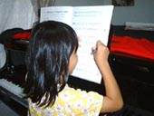
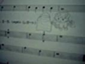
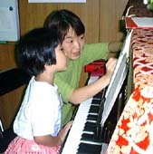
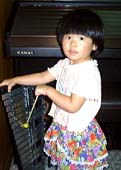
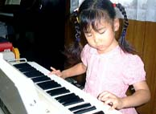
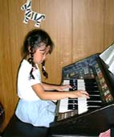
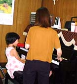
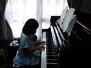
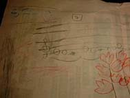
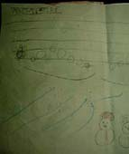

|
子どもの心に湧き出てくるイメージを 大事にして、音楽で表現し、 音楽を楽しむ心を育てたい。 そんな思いで、毎日のレッスンで 奮闘しています。 そのレッスンの中から、 さまざまなエピソードを紹介します。 |
ゆきちゃん（一年生）のレッスン 九月二十四日★フィンガートレーニングで (8小節ほどのかんたんなフレーズをなめら かな音でフレーズ感を出して弾く) 2部音符(ターアン)と全音符(ターアーアーアー)ばかりの ★「たのしくゆこう」を弾くまえに、「この曲はどんな曲かなー、うたってみよう」と先生の伴奏で何度かくり返し歌ってみる。「大きな声でうたうといいかな」と思った先生は、ちょっと強い音でピアノを弾いていまし
た。でもなんだかうまくいきません。  Ｉフレーズごとに動きの表情をかえて踊りだしました。 どこまでもイメージのひろがっていく、ゆきちゃんでした。 （どんな曲になるのかな、たのしみです） フィンガートレーニングで、ゆきちゃんがイメージした ももかちゃん（一年生）、レガートにひく練習で‥‥‥
 妹のさくらちゃん (10.10/2) |
|
あやめちゃん（五才）「たのしいゆめ」 とってもよくがんばりました！！ 今日がおたんじょうびで、五才になったあやめちゃん 「たのしいゆめ」のメロディをオルガンでいっしょうけんめい練習しています。 「この曲は、片手でひけたらマルにしてあげようかな」 みんながお絵かきしている中でも、一人でいっしょうけんめい練習していました。 |
あやかちゃん（小学一年生）一ヶ月後、発表会で先生とドリマトーン（電子オルガン）のデュオをします。  「せんせい、（せんせいのパート）ひけるようになった？」 ‥‥‥ご心配おかけします (^_^)
 しょうこちゃん（小学二年生）のちょっと小話 出席帳にレッスン日を書きながら （10.6/29） |
ゆきちゃん「この曲はね、くちぶえでふいてるかんじがするよ。
ひゅひゅひゅひゅ～～～。」
口笛のまねをして、気持ちよさそうに延々と歌っています。
困った先生もいっしょになって「ひゅひゅひゅひゅ‥‥‥」
ゆきちゃん「こんどは、ひゅーひゅーってうたいながら、
ペダル（サスティン・ペダル）をふんで、メロディを
ひいてみるね。ペダルはやさしくふむと、にごらないんだよ。
ひゅひゅひゅひゅ～～～～。」
|
自分でペダルを半分だけふみながら、右手のメロデ ィをひいて、歌っています。 せんせい「ゆきちゃん、ひゅーひゅーって歌いなが ら、両手もやってみたら？」 ゆきちゃん「できるかなー、 ひゅひゅひゅ ＼(^_^)／＼(^_^)／＼(^_^)／ |
 （10.6/28） |
なるみちゃん（小学一年生）のつくった曲集なるみちゃんが、ちょっとドキドキしながら、はずかしそうに何かを持ってきました。 広告のチラシを本のようにして、セロテープでとめてあります。 中をあけると、手書きの五線の上に、音符がならんでいました。 二曲目は「ゆきのゆきだるま」 同じように、イラストつきの手書きの楽譜です。 なにより、感心したのは、楽譜には、ちゃんとスラーがついているのです。 二曲目の「ゆきのゆきだるま」をひくとき、 本って言っても、今のところこの二曲だけなんです。 |


なるみちゃんのつくった「もみじ」と「ゆきのゆきだるま」
|